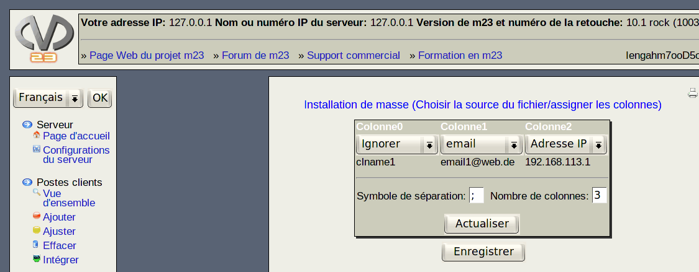

suivant:
Choisir le fichier de
monter:
Outils de masse
précédent:
Choisir la source de
Table des matières
Choisir la source de données/assigner les colonnes

Ce dialogue est divisé en deux parties:
Choisir le fichier de données et le télécharger
Assigner les propriétés aux colonnes du fichier texte
Sous-sections
Choisir le fichier de données et le télécharger
Notez
Assigner les colonnes du fichier de données aux propriétés du poste client
Procédez comme suit:
root 2019-06-03